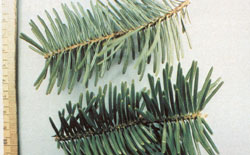
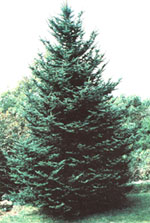

In issue 77 we told you about collecting evergreen seeds for cash. And now, here's how to . . .
You can actually pick your way to a degree of financial independence by collecting boughs of balsam fir (Abies balsamea). It's an enterprise that allows you to be your own boss . . . requires no special tools . . . and is so easy the whole family can pitch in. Best of all, when the picking is done with care, the trees aren't damaged . . . so a homesteader can turn a grove of evergreens into a renewable source of income.
This is how the business works: In the fall of the year, roughly from late September through early December, firms that manufacture Christmas wreaths are in the market for fresh, green balsam boughs. And since (in my experience) the demand for this product always seems to outweigh the supply, you'll likely be able to sell all the branches that you can collect . . . provided you make the proper contacts before you head for the woods.
Here in northern Wisconsin, entire families take to the forest each fall, devoting every hour of daylight to the balsam harvest. Some groups make several thousand dollars during an average ten-week picking season, and a few old hands actually earn their entire annual income in this way.
My wife and I first began picking boughs when we moved to our homestead in 1976. And although the branches can be sold by the bundle, the pound, or the ton, we opted to be paid by the ton. [EDITOR'S NOTE: Current prices paid to balsam gatherers vary considerably-from as little as $300 per ton to as much as $1.00 per pound-depending upon the part of the country you live in and the size of the order. Check with a local nursery to determine the going rate for balsam . . . or for other evergreens preferred in your area.]
If you'd like to try your hand at this bucks-for-branches business, the first thing you'll need to do is to locate a good stand of balsam trees. The evergreens grow from Minnesota to the Atlantic and south into Virginia, as well as all across Canada. Similar species are found in the western states (most notable among them is the Douglas fir) and in the high mountains of the South.
Balsam trees require a humid climate and abundant ground moisture, and thrive in clay and other poorly drained soils. At the higher altitudes, you're likely to find them growing with hemlock, spruce, and broadleaved timber, but pure stands of the fir are most often located in swamps and other marshy places. Seek out these low spots . . . since they'll provide the most lucrative picking.
Don't, however, confuse balsam with spruce (it's all too easy to do). The best way to discover which is which is by rolling the needles between your fingers. Spruce needles are four-sided and will roll easily, while balsam's flat needles won't roll at all. Hemlock is also similar to balsam, though the latter's needles have no stalk and are longer than those of hemlock. Just keep your eye out for 3/4"- to 1-1/2"-long needles that are dark green above and smooth, with two white lines below. You'll also soon notice that balsam cones stand upright on the branches and leave round scars when they fall. As a final check, look at the tree's bark: Balsam's is smooth but pocked with blisters . . . hemlock bark is rough and furrowed.
If you don't own land where balsam fir grows, try to make a deal with a neighbor who does. (In our neck of the woods, some families rent access to balsam stands from private landowners . . . either at so much an acre or for a percentage of the proceeds. Go the percentage route if you can . . . then, if you discover that picking boughs isn't to your liking, you won't be out any cash.) As another alternative, find out whether you can get a cutting permit to harvest on nearby public lands.
When you've located a stand of balsam, you'll learn-upon examining the trees-that there are two kinds of boughs. In the trade, they're referred to as rounds and flats.
Rounds are boughs from trees exposed to a lot of sunlight, where-as a result-the needles grow all around the branch like the bristles on a bottle brush. Rounds bring more money than do flats, but they're also harder to come by. In a dense fir forest, where the competition for sunlight is heavy, most trees will produce flats . . . boughs with needles growing straight out from only two sides, like the teeth of two combs with their spines laid back to back. Since flats are the most commonly found limbs, they're the mainstay of the industry.
Once you've located a place to pick, you'll have to find a market for your boughs. This usually isn't difficult, but it may require a little legwork. In some areas, companies that make such purchases will post notices in the local newspapers, grocery stores, laundries, and gas stations a few weeks before picking time begins . . . or your local florists and nurseries, or the Chamber of Commerce, may be able to provide names of potential buyers. If not, try calling the state conservation department. Then, if none of those sources is able to help, visit a store that sells wreaths, ask the name of its supplier, and contact that company. (Be sure to enclose a self-addressed, stamped envelope with any such inquiries.)
Actually, I don't think you'll have to go to that much trouble, because the demand for pickers is usually great. If you doubt it, consider this: Our northern Wisconsin homestead is near Lake Superior, yet-each fall-buyers from as far away as Iowa, Missouri, and Indiana call on us, looking for balsam boughs. And they all have the same complaint . . . they can't find enough pickers in their own areas, so they're forced to make the long trip north to obtain enough branches for the season.
When you've found a purchaser, ask whether you should deliver the boughs or hold them to be picked up. Usually, a buyer will come and get your harvest, especially if you have 100 pounds or more on hand. He or she will weigh your stacks (or sometimes take your word for the poundage), load them on a truck, and then either write you a check on the spot or give you a receipt and send the payment a few days later. Once you're known as a bough cutter, chances are the firm's representatives will be knocking on your door regularly . . . and-if you're lucky-so will its competitors.
If two or more buyers offer to purchase your product, you'll find you've hit a gold mine, as they'll try to outbid each other . . . and this could bring you in some extra money! However, always be fair to your buyer, and you'll occasionally find that a 1,900-pound load is paid as a full ton (2,000 pounds), or that a mixed batch of boughs brings you the higher "all rounds" price.
Certainly, you should never try to increase the weight of your bundles by adding sticks and stones or by sprinkling them with water that will turn to ice. You may fool a buyer once with such dishonest tricks, but after that you probably won't have a buyer with whom to play games.
Picking balsam is very messy work, so-before you begin-round up some flexible handgear (cotton gardener's gloves are fine). The tree's resin (which is the "Canada balsam" used to mount specimens on micro scope slides) is harmless to most people's skin, but it is difficult to remove. (Kerosene or alcohol will neutralize its stickiness, but you'll still have black stains on your skin for days.)
It's also best to wear some kind of eye protection, since sooner or later you'll get slapped in the face by a springy bough, and-if it strikes your eye-the pain can be truly intense!
After a dry summer, you'll likely be able to snap the limbs free with your hands. But following a wet season, you'll need a pair of pruning shears or diagonal wire cutters to dismember the branches. You'll also need cordlots of it!-for bundling the limbs. (Discarded baling twine is excellent for this job.)
However, before you cut a single bough, do check with the purchasing firm to see what its requirements are. Most will ask for branches 18" to 24" in length, and it's important to stay within the specified range. If you cut them too long, you'll be charged for trimming the boughs to the correct length . . . and if you cut them too short, you won't be able to sell the harvest at all.
Your buyer might also want you to keep rounds and flats in separate stacks, but try to avoid having to do this. Even though you'd be paid a little more for rounds, the time saved by simply combining rounds and flats in the same stacks and selling the whole bundle as lowerpriced flats will pay off in the long run.
As soon as the buying season arrives, go to one of those pure stands of balsam you've scouted out and begin your harvest. In fact, you might even want to get a jump on the job by starting work a week or ten days (no more!) before the buying begins. Balsam will, you see, stay fresh and green for a short period if the bundles are stacked neatly outdoors in the cold . . . but keep them away from water, so they won't get locked in ice.
You can take your time as you work, but don't be too easy on yourself. After all, if you stop to admire every tree, or break for coffee very often, it'll take you forever to pick a ton of limbs. Also, try to avoid the temptation of always heading over a nearby hill to pick when there are plenty of trees right where you stand. Otherwise, you might well end up in the middle of the next county with only a handful of boughs. (If possible, take a tractor and hay wagon into the woods with you. It'll save a lot of labor when the time comes to get the bundles out of the forest.)
Above all, don't over-pick a tree. If you approach your work as pruning, the evergreen will actually grow fuller and thicker in years to come as a result of your efforts. We usually take only a couple of boughs from each tree.
The best working method we've found is to have one person pick while the other stacks the boughs and ties them in large bundles. When doing this, make sure all the broken ends of the limbs point in the same direction. The wreathmaker who gets your stack will bless you for this small bit of consideration. It takes only a second of your time and will earn you a goad reputation .. . which will result in repeat business from your customers.
An easy-to-handle stack-when tightly compressed and tied-will be about 30" high. Such a bundle will weigh approximately 25 pounds, and you'll be able to make a rough estimate of your income by simply counting the number of stacks you have. The last time my wife and I calculated our "per-hour income" (back in 1979), we found that if we made four of those stacks each hour, we earned about $6.25 in 60 minutes of labor. After doing so for ten hours a day every day for ten weeks, we brought in $4,375 between us . . . and that was the output of only two people, taking their time as they worked! (As you can see, though, the more pickers you have, the more money you'll make . . . so put your whole family to work, and your guests from the city, too!)
Finally, believe that you can be a success at this business. At first, it'll probably seem as if picking a ton of boughs will take you the rest of your life. (I feel that way at the start of every season!) But after a couple of days, you'll get the hang of it . . . and when you receive your first check, you'll realize how lucky you are to be paid for work that's so pleasant.
Best of all, you'll have found one way to utilize a gift from Mother Earth without leaving her in tears when the taking's done . . . and that's the true bottom line.
When you've located a buyer for your balsam boughs, you might want to ask the folks at that firm about the need for wreathmakers.
Many people here earn extra cash by doing this crafting at home on a piecework basis. If they're good, the wreath-wrappers earn about $10 an hour. In fact, I know a few folks who pick boughs by day and make wreaths at night. Of course, there's a knack to crafting these forestfresh holiday decorations, but the skill can be picked up quite quickly. [EDITOR'S NOTE: You might begin by reading "Make Wreaths for Winter Dollars" in MOTHER NO. 36, page 85 . . . sec page 48 to order back issues.] If you're hired, the company will furnish all the supplies you need.
Should you live in an area where there are no buyers for your evergreens, perhaps you could collect the boughs, fashion your own wreaths, and sell them yourself. A number of families have found that their earnings are highest when some members pick while others make wreaths. Later, they peddle the decorations at flea markets, craft shops, and art shows. A standard wreath brings in about $25, so if there's a born salesperson in the family, this just might be your ticket to a home business (especially if you live near a fairsized city).
If nothing else, why not make a few wreaths as gifts for friends? They'll cost little but your time, yet each one will remain an expression of your love even after the tinsel of Christmas is gone.
|
 |
 |
|